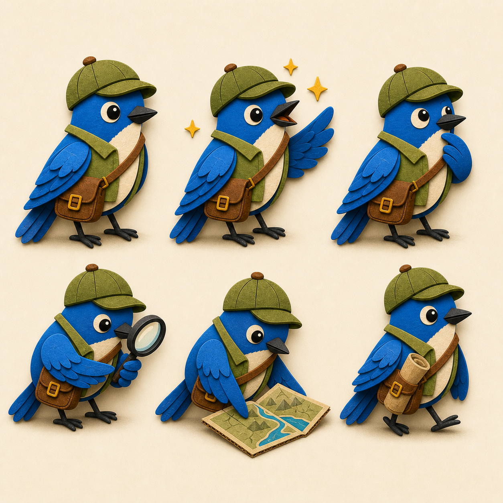

Find the Bird · canonical character
P3 Explorer Bluebird
The mascot identity is fixed. These sheets are the visual source of truth for every future UI asset, animation, reward scene, and marketing image.
Approved mascot · locked

Identity sheet
Turnaround and palette
Canonical silhouette, proportions, costume placement, avatar crop, and color family.

Behavior sheet
Expressions and tool use
Permitted personality range and wing-safe interactions with the magnifier, map, and strapped field guide.
Non-negotiable rules
- Exactly two wings and two legs; wings replace arms.
- No human hands, fingers, shoulders, or separate gripping limbs.
- Cobalt, cream, olive, and leather costume identity remains stable.
- Bold flat-shaded cardstock with crisp cardboard depth; never felt or plush.
- Friendly storybook proportions; never realistic bird anatomy.